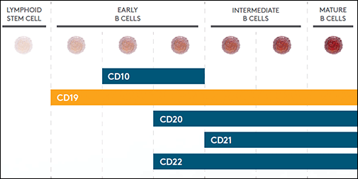
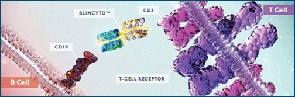
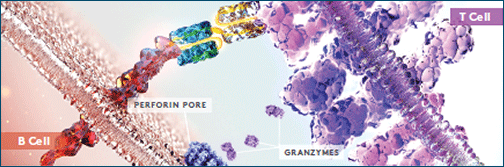
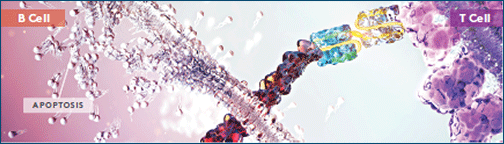
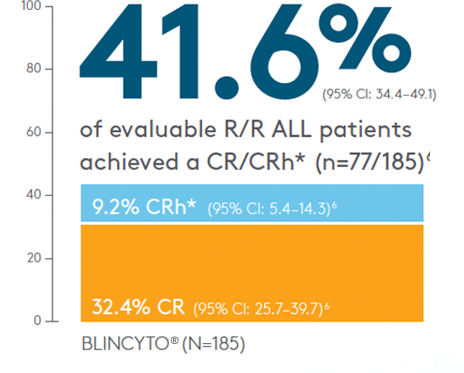
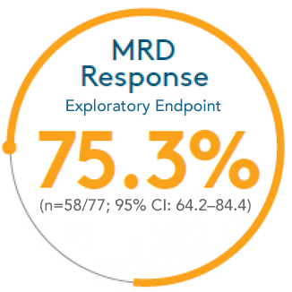
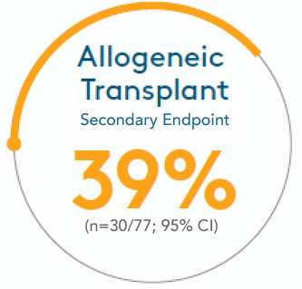
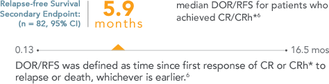
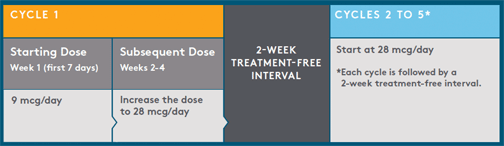

| Prescribing Information & Medication Guide > | Important Safety Information > |
For the treatment of Philadelphia chromosome-negative relapsed or refractory B-cell precursor acute lymphoblastic leukemia (ALL).
{{customText[ Hello | Hi ]}} {{accLname}},As your Amgen representative, I can help you leverage various resources that are available to support the BLINCYTO® treatment experience.
Indication
BLINCYTO® (blinatumomab) is indicated for the treatment of Philadelphia chromosome-negative relapsed or refractory B-cell precursor acute lymphoblastic leukemia (ALL). This indication is approved under accelerated approval. Continued approval for this indication may be contingent upon verification of clinical benefit in subsequent trials.
IMPORTANT SAFETY INFORMATION
WARNING: CYTOKINE RELEASE SYNDROME and NEUROLOGICAL TOXICITIES
Cytokine Release Syndrome (CRS), which may be life-threatening or fatal, occurred in patients receiving BLINCYTO® (blinatumomab). Interrupt or discontinue BLINCYTO® as recommended.
Neurological toxicities, which may be severe, life-threatening or fatal, occurred in patients receiving BLINCYTO®. Interrupt or discontinue BLINCYTO® as recommended.
Contraindications
BLINCYTO® is contraindicated in patients with a known hypersensitivity to blinatumomab or to any component of the product formulation.
Please see additional Important Safety Information below.
|
Amgen is committed to your office and your patients Comprehensive support: ensuring a successful experience with BLINCYTO® throughout the ALL treatment journey Tools to help you, your team, and your patients
Amgen will continue to develop comprehensive support programs and keep you informed when more information about BLINCYTO® becomes available. Remind your patients to read the medication guide before they receive BLINCYTO® and before each BLINCTYO® infusion. There may be new information. Learn more about AMGEN support > |
||||||||
|
A monoclonal anitbody with an innovative mechanism of action BLINCYTO® is the first and only FDA-approved bispecific CD19-directed CD3 T-cell engager BLINCYTO® simultaneously binds to CD19 and CD3, helping T cells destroy target B cells B cells and CD19
Surface antigen expression throughout the B-cell life cycle{{citationNumber[3]}}  Once BLINCYTO® forms the cytolytic synapse between CD19 and CD3, which leads to upregulation of cell adhesion molecules, release of inflammatory cytokines, and proliferation of T cells, resulting in redirected lysis of CD19+ cells. Learn more about the BLINCYTO® MOA > |
|||||
|
Mechanism of action CD19 is an ideal target for B-cell precursor ALL therapy{{citationNumer[1]}},{{citationNumber[2]}} Surface antigen expression throughout the B-cell life cycle{{citationNumber[3]}}
CD19 is ubiquitously expressed in B-precursor ALL, with expression levels of ≥ 95% on B-lineage cells.{{citationNumber[3]}},{{citationNumber[4]}} BLINCYTO® is the first and only bispecific CD19- directed CD3 T-cell engager{{citationNumber[6]}}  TARGET: BLINCYTO® binds to CD19 expressed on the surface of cells of B-lineage origin and CD3 expressed on the surface of T cells, forming a synapse.{{citationNumber[6]}}  ENGAGE:Once the synapse is formed, BLINCYTO® leads to upregulation of cell adhesion molecules and the production of cytolytic proteins.{{citationNumber[6]}}  ACTIVATE:The release of inflammatory cytokines, and proliferation of T cells, results in redirected lysis of CD19+ cells.{{citationNumber[6]}} Learn more about the BLINCYTO® MOA > |
|
Phase 2 pivotal study design The largest prospective study in relapsed or refractory (R/R) all to date{{citationNumber[7]}} Inclusion Criteria{{citationNumber[6]}}:
Exclusion Criteria{{citationNumber[6]}}:
Phase 2, open-label, multicenter, single-arm clinical trial{{citationNumber[6]}}
Study Endpoints{{citationNumber[6]}}-{{citationNumber[9]}}
Phase 2 pivotal study results
Primary endpoint (CR/CRh*) achieved 
Secondary and exploratory endpoints achieved  With CR/CRh* also had an MRD response (defined as MRD by PCR < 1 x 10-4){{citationNumber[6]}}
MRD Response and Survival Rates  of patients who achieved CR/CRh* went on to receive allogeneic transplant{{citationNumber[6]}} 
CR = complete response; CR was defined as ≤ 5% of blasts in the bone marrow, no evidence of disease, and full recovery of peripheral blood counts (platelets > 100,000/microliter and absolute neutrophil counts [ANC] > 1,000/microliter).{{citationNumber[6]}} Learn more about BLINCYTO® efficacy > |
||||||||||||||||||||||||||||||||||||||||||||||||||||||||||

|
Dose and administration BLINCYTO® is administered as a continuous intravenous infusion delivered at a constant flow rate using an infusion pump that is programmable, lockable, non-elastomeric, and has an alarm. A single cycle of treatment with BLINCYTO® consists of 4 weeks of continuous intravenous infusion followed by a 2-week treatment-free interval. Patients may receive 2 cycles of induction treatment followed by 3 additional cycles of BLINCYTO® consolidation treatment. Dosage for patients at least 45 kg (99 lbs) in weight  Hospitalization is recommended at a minimum for the first 9 days of the first cycle and the first 2 days of the second cycle. For all subsequent cycle starts and reinitiation (eg, if treatment is interrupted for 4 or more hours), supervision by a healthcare professional or hospitalization is recommended.
Premedication Download Full Pharmacy Brochure > |
|
CMS APPROVES
BLINCYTO add-on payment for FY 2016:
|
||||||||||||||||||||
{{customText[ I look forward to our next meeting. | I look forward to our upcoming meeting. | I’ll be in touch to set up our next meeting. | Please contact me at the phone number below with any questions. ]}}
{{customText [Sincerely, | Regards, | Talk to you soon, ]}},
RepName
Amgen Oncology
Phone Number
1. Jain N, Gurbuxani S, Rhee C, Stock W. In: Hoffman R, Benz EJ Jr, Silberstein LE, Heslop H, Weitz J, Anastasi J, eds. Hematology: Basic Principles and Practice. 6th ed. Philadelphia, PA: Saunders-Elsevier;2013:960-980.
2. Siegel R, Naishadham D, Jemal A. CA Cancer J Clin. 2013;63:11-30.
Warnings and Precautions
Cytokine Release Syndrome (CRS): Life-threatening or fatal CRS occurred in patients receiving BLINCYTO®. Infusion reactions have occurred and may be clinically indistinguishable from manifestations of CRS. Closely monitor patients for signs and symptoms of serious events such as pyrexia, headache, nausea, asthenia, hypotension, increased alanine aminotransferase (ALT), increased aspartate aminotransferase (AST), increased total bilirubin (TBILI), disseminated intravascular coagulation (DIC), capillary leak syndrome (CLS), and hemophagocytic lymphohistiocytosis/macrophage activation syndrome (HLH/MAS). Interrupt or discontinue BLINCYTO® as outlined in the Prescribing Information (PI).
Neurological Toxicities: Approximately 50% of patients receiving BLINCYTO® in clinical trials experienced neurological toxicities. Severe, life-threatening, or fatal neurological toxicities occurred in approximately 15% of patients, including encephalopathy, convulsions, speech disorders, disturbances in consciousness, confusion and disorientation, and coordination and balance disorders. The median time to onset of any neurological toxicity was 7 days. Monitor patients for signs or symptoms and interrupt or discontinue BLINCYTO® as outlined in the PI.
Infections: Approximately 25% of patients receiving BLINCYTO® experienced serious infections, some of which were life-threatening or fatal. Administer prophylactic antibiotics and employ surveillance testing as appropriate during treatment. Monitor patients for signs or symptoms of infection and treat appropriately, including interruption or discontinuation of as needed.
Tumor Lysis Syndrome (TLS): Life-threatening or fatal TLS has been observed. Preventive measures, including pretreatment nontoxic cytoreduction and on treatment hydration, should be used during BLINCYTO® treatment. Monitor patients for signs and symptoms of TLS and interrupt or discontinue BLINCYTO® as needed to manage these events.
Neutropenia and Febrile Neutropenia, including life-threatening cases, have been observed. Monitor appropriate laboratory parameters during BLINCYTO® infusion and interrupt BLINCYTO® if prolonged neutropenia occurs.
Effects on Ability to Drive and Use Machines: Due to the possibility of neurological events, including seizures, patients receiving BLINCYTO® are at risk for loss of consciousness, and should be advised against driving and engaging in hazardous occupations or activities such as operating heavy or potentially dangerous machinery while BLINCYTO® is being administered.
Elevated Liver Enzymes: Transient elevations in liver enzymes have been associated with BLINCYTO® treatment. The majority of these events were observed in the setting of CRS. The median time to onset was 15 days. Grade 3 or greater elevations in liver enzymes occurred in 6% of patients outside the setting of CRS and resulted in treatment discontinuation in less than 1% of patients. Monitor ALT, AST, gamma-glutamyl transferase (GGT), and TBILI prior to the start of and during BLINCYTO® treatment. BLINCYTO® treatment should be interrupted if transaminases rise to > 5 times the upper limit of normal (ULN) or if TBILI rises to > 3 times ULN.
Leukoencephalopathy: Although the clinical significance is unknown, cranial magnetic resonance imaging (MRI) changes showing leukoencephalopathy have been observed in patients receiving BLINCYTO®, especially in patients previously treated with cranial irradiation and anti-leukemic chemotherapy. Preparation and administration errors have occurred with BLINCYTO® treatment. Follow instructions for preparation (including admixing) and administration in the PI strictly to minimize medication errors (including underdose and overdose).
Adverse Reactions
The most commonly reported adverse reactions (≥ 20%) in clinical trials were pyrexia (62%), headache (36%), peripheral edema (25%), febrile neutropenia (25%), nausea (25%), hypokalemia (23%), rash (21%), tremor (20%), diarrhea (20%) and constipation (20%).
Serious adverse reactions were reported in 65% of patients. The most common serious adverse reactions (≥ 2%) included febrile neutropenia, pyrexia, pneumonia, sepsis, neutropenia, device-related infection, tremor, encephalopathy, infection, overdose, confusion, Staphylococcal bacteremia, and headache.
Dosage and Administration Guidelines
BLINCYTO® is administered as a continuous intravenous infusion at a constant flow rate using an infusion pump which should be programmable, lockable, non-elastomeric, and have an alarm.
It is very important that the instructions for preparation (including admixing) and administration provided in the full Prescribing Information are strictly followed to minimize medication errors (including underdose and overdose).
Please see full Prescribing Information, including Boxed WARNINGS and Medication Guide, for BLINCYTO®.
|
Amgen One Amgen Center Drive Thousand Oaks, CA 91320-1799 |
LEARN MORE > | |
| www.amgen.com | ||
| © 2016 Amgen Inc. All rights reserved. USA-002-119052 | ||
Click here to unsubscribe to future emails
Privacy Statement | Terms of Use | Contact Us